Raspagem de pisos
Remoção da camada desgastada para nivelar a superfície e preparar a madeira para um novo acabamento.
Atendimento em São Paulo e região
Raspagem, restauração e acabamento de pisos com capricho, prazo combinado e resultado limpo para casas, apartamentos e comércios.
Serviços
Remoção da camada desgastada para nivelar a superfície e preparar a madeira para um novo acabamento.
Correções pontuais, renovação visual e cuidado com marcas de uso para valorizar ambientes internos.
Finalização com proteção e brilho equilibrado, buscando um resultado bonito, resistente e fácil de manter.
Portfólio
Resultados com visual renovado, acabamento limpo e atenção aos detalhes que valorizam cada ambiente.
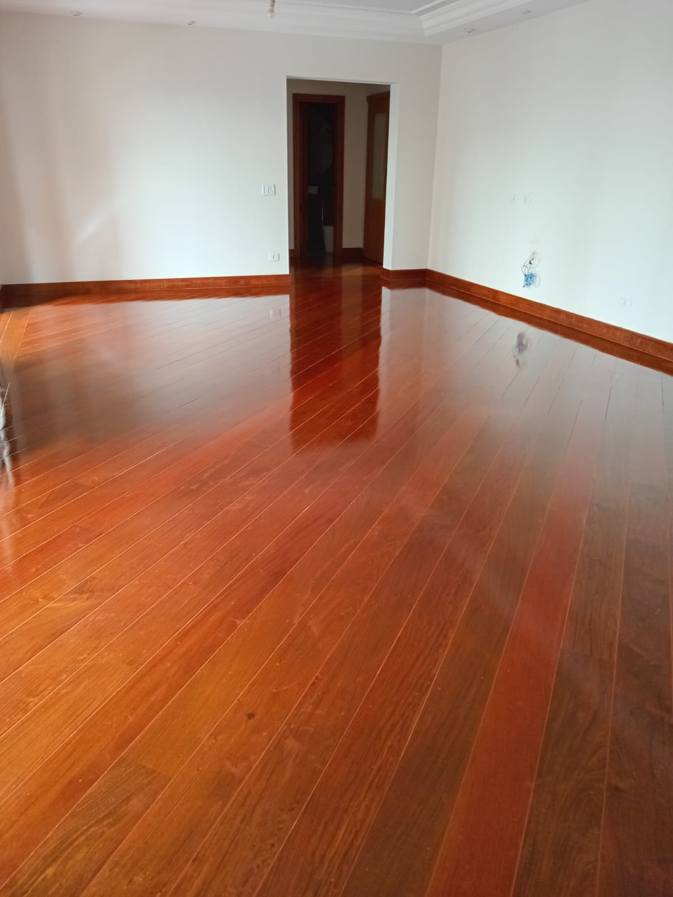
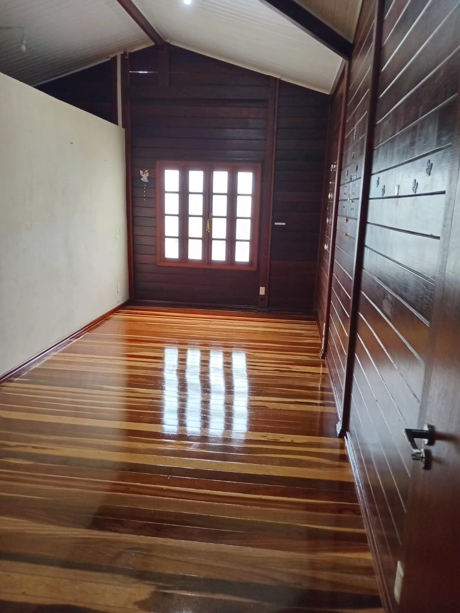
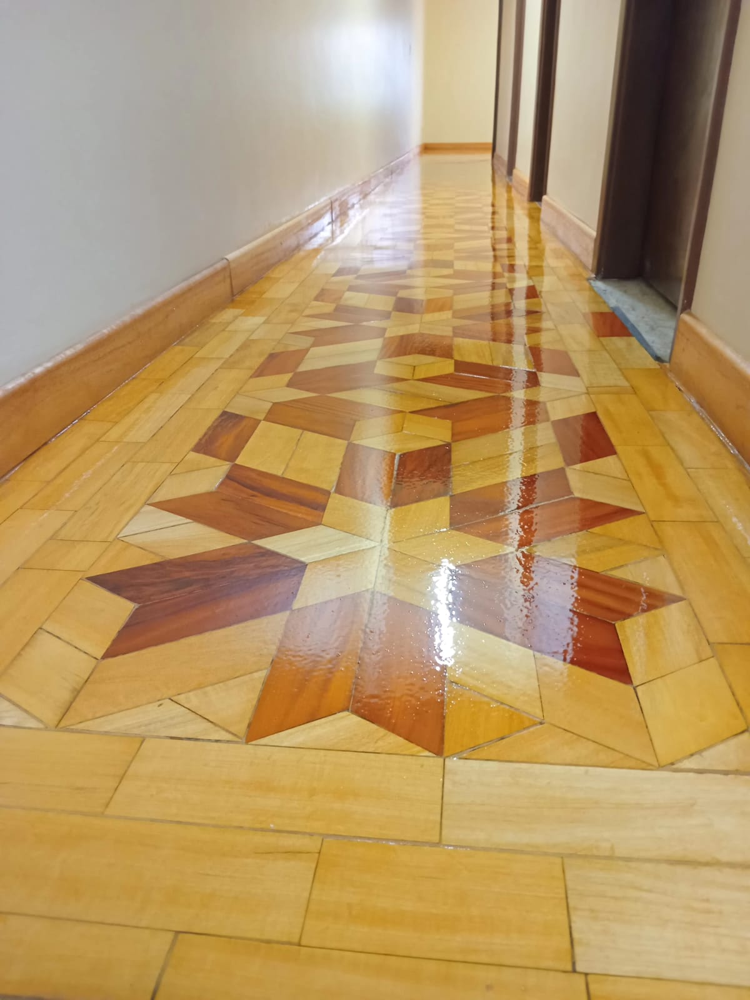
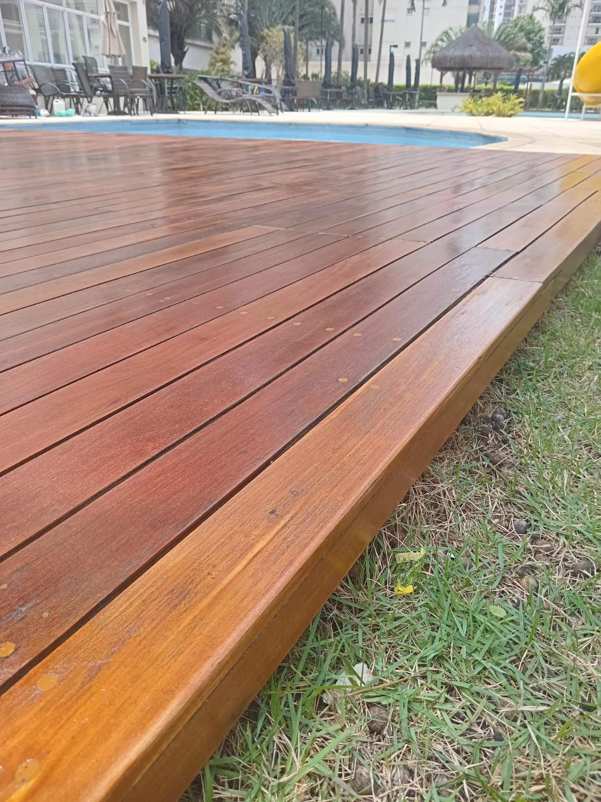
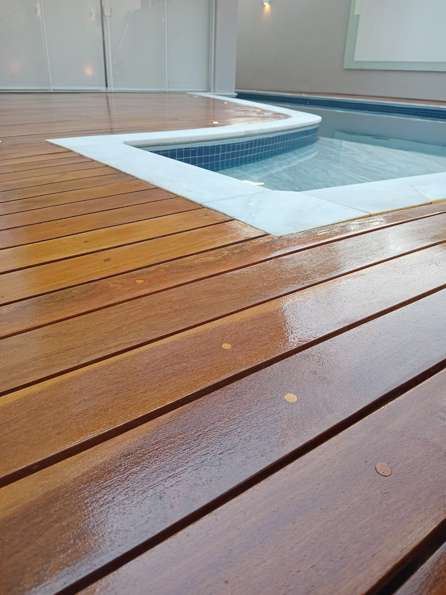
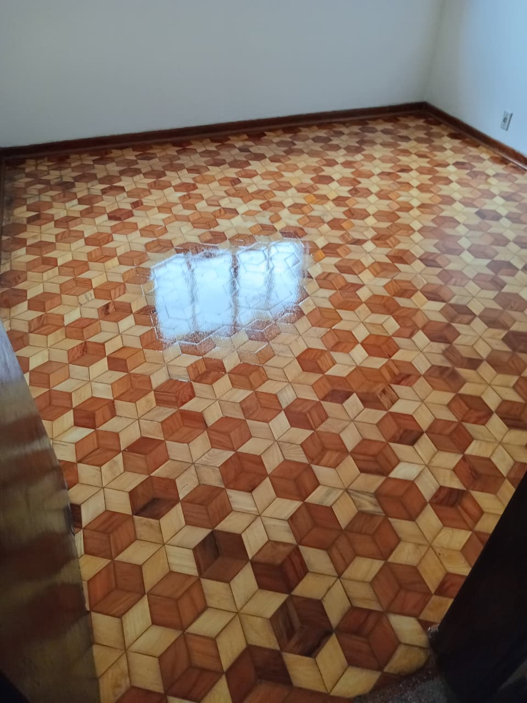
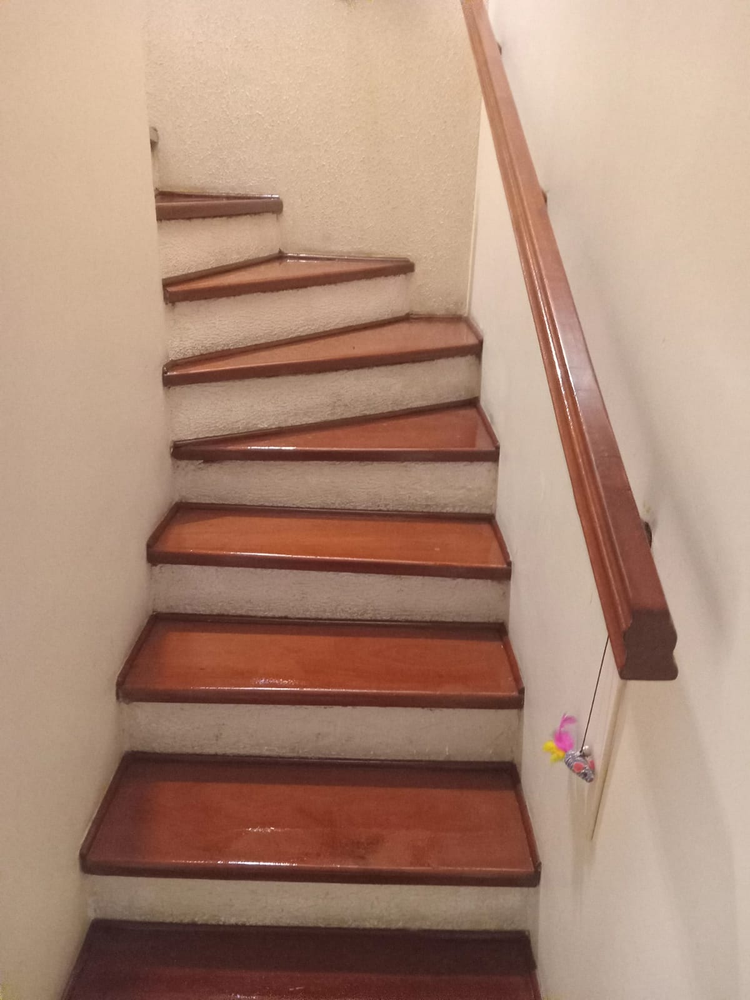
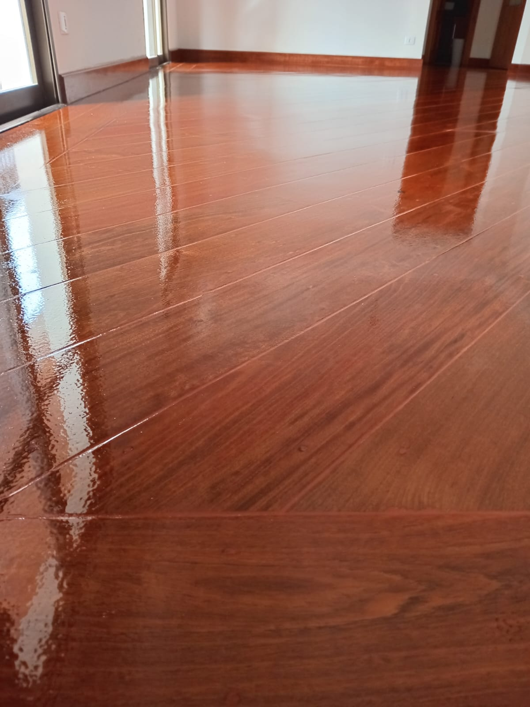
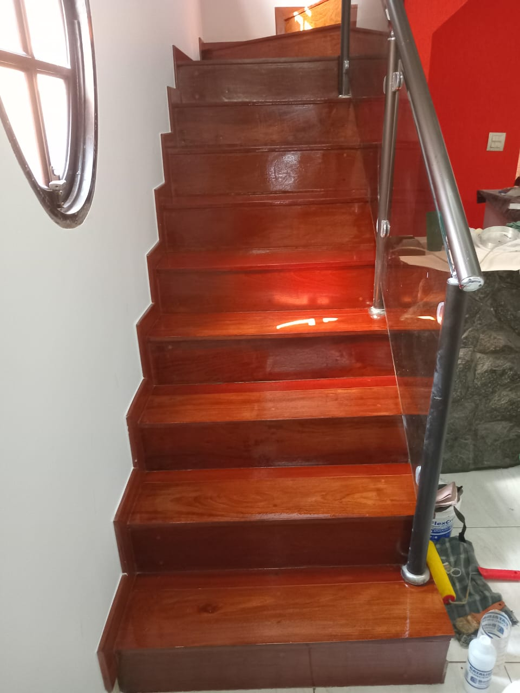
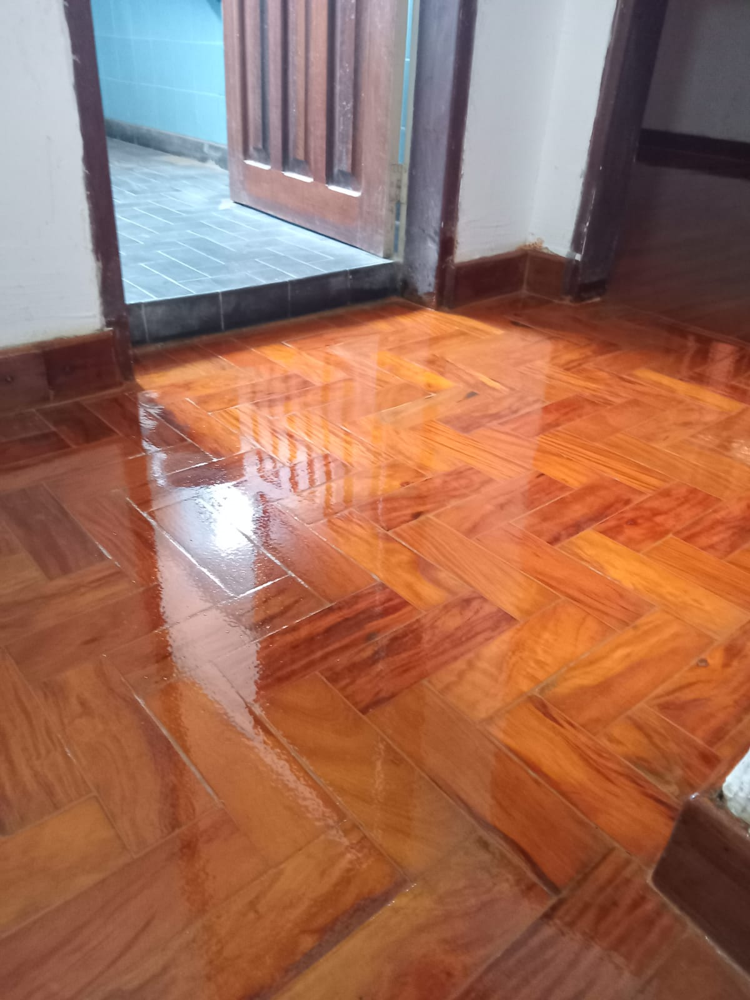
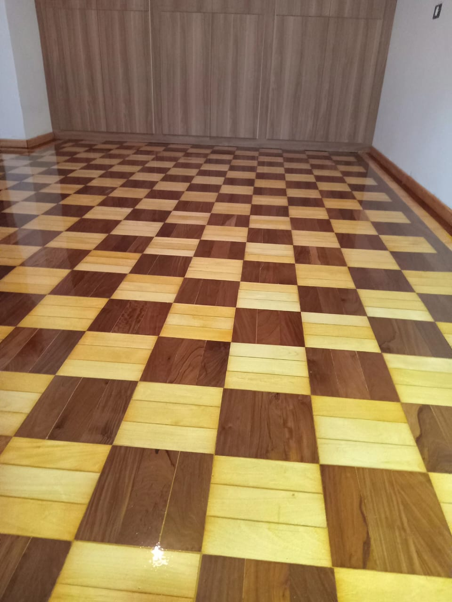
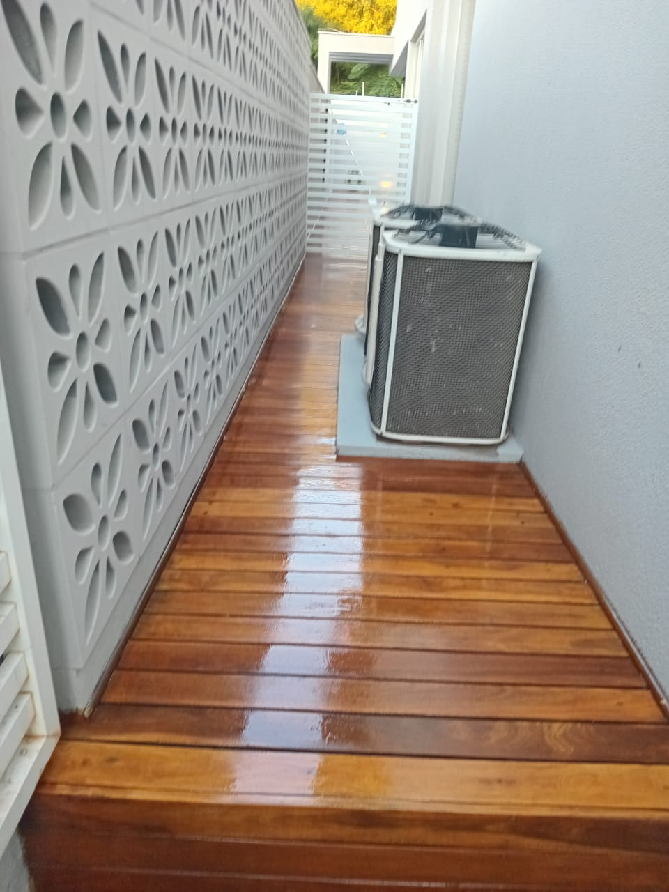
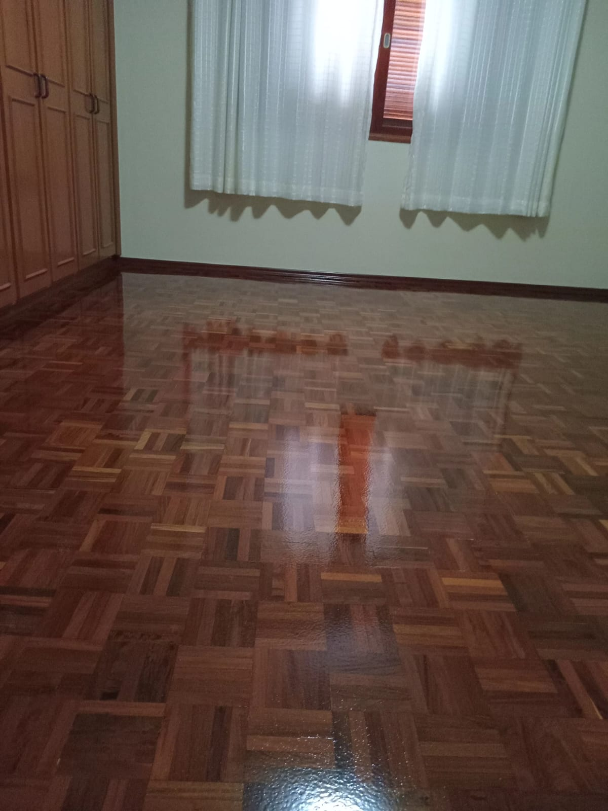
Orçamento
Envie uma mensagem com fotos do piso, bairro e metragem aproximada para receber uma orientação inicial.